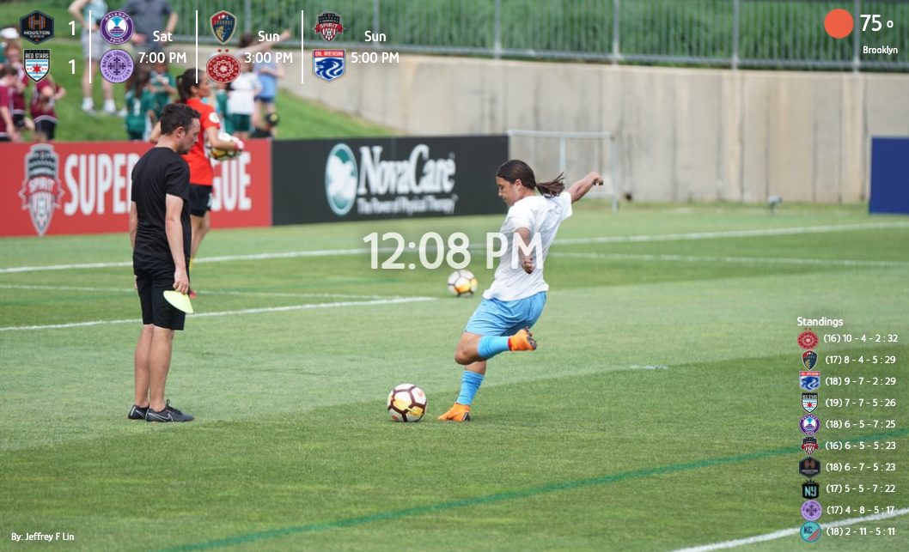

js, html, css
Sept 1st, 2021
This project was to build a chrome extension that displays a dashboard with various info every time the user opens a new tab in chrome. The main point of this project was all about interacting with APIs. There are loads of free public APIs out there, and to personalize my dashboard past what the class taught (unsplash and openweather, although the api keys were taken care of by scrimba), I went looking for a sports API that had info for the National Women's Soccer League (NWSL). I am a bit obsessed with women's soccer (my friends will tell you that is an understatement) but keeping track of games beyond my main team means constantly googling. I wanted to display the week's games (Monday to Sunday) and keep track of standings. Since it's a bit of a lesser known league (insert rant about sexism in sports here) my options were limited but I found API-FOOTBALL to be exatly what I needed. I subscribed through RapidAPI, which allows you to keep track of many API subscriptions in one place! Very handy. API-FOOTBALL allows for 100 calls a day for free, which for personal use is mcuh more than needed (although I did come close to going over the limit during development). The only snag I ran into here was that the standings data wasn't up to date. It didn't even have the correct teams for the current season! Luckily a quick post on the forum alerting them to the issue managed to get the issue solved within a few days.
This was an exciting project because as I started making it my own I thought of all the ways other NWSL fans could be able to customize it, and how I could potentially use donations to up my API usage so more people could use my dashboard without costing me money. Then I quickly realized I wasn't sure I would be able to ever put it on the chrome webstore because of privacy concerns. How was I supposed to hide my API keys?
Well I fell down a google rabbit-hole trying to find ways to safely put my extension up without exposing my API key. I knew it was somewhat futile without creating my own server since there's always a way to see front-end code in developer mode. Yet I persisted in looking up videos and other tutorials from people building chrome extensions that interact with APIs. What I found mostly was... people don't hide their API keys. Sometimes this is perfectly fine, because the API key is useless without other credentials and tokens that usually the extension user has to put in themselves. The strangest thing to me was people would still make the 'attempt' to hide them by storing them in their own file. The key was still extremely visible in their github/through developer tools, actually easier to find than if they had embedded it into their main script since usually the main scripts were minified, but the file they put their actual key in just had the few lines of code that stored all their sesnsitive keys and client ids! You'll notice in my github, I opted to store my API key in it's own file and then put that file in my .gitignore so it didn't get pushed to github. So did I ever find a solution that would allow me to share my dashboard with other NWSL fans?
Yes, but I haven't done it yet. The solution I found that is the safest but still open to potential hacks uses AWS Lambda to act as a server to store your API keys. Your app can call the server, and settings in AWS Lambda can make sure it only passes the key back if the request is coming from a specific source. This is the video I found that was most useful. AWS Lambda does cost money if you use it too much, but it's extremely difficult to hit that limit as a small app producer. If you are wondering why I haven't tried it out myself yet, mostly it's because I'm still working on adding customization options for the user, and I find the unsplash photo library to be a bit low on nwsl pictures, so I've been looking for a potential alternative. I'll also probably need to limit the number of API calls to unsplash and open weather if I'm going to publicly release this.
For now I'm happy to use it as my own as I work on other projects and complete the scrimba career path :)
See my code on github.